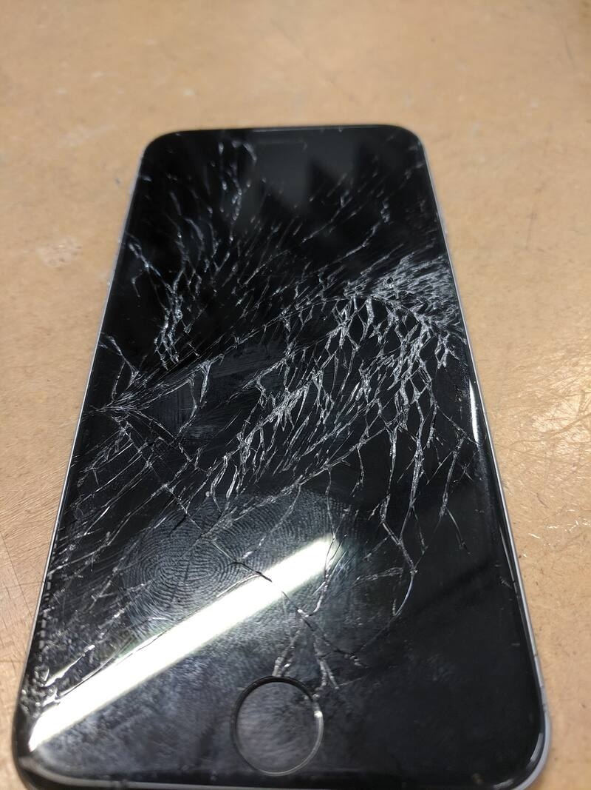
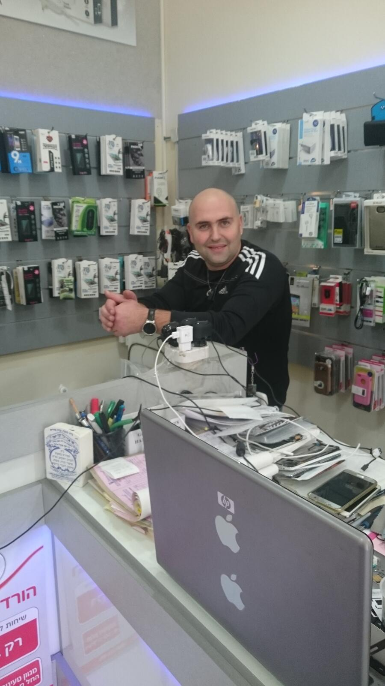
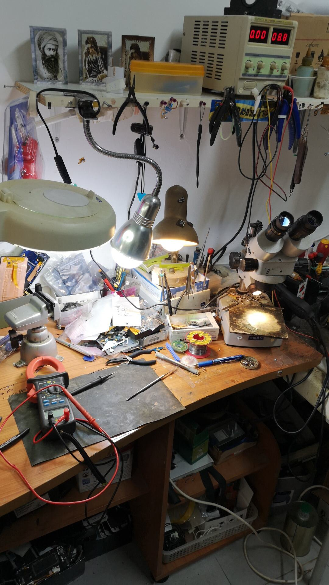
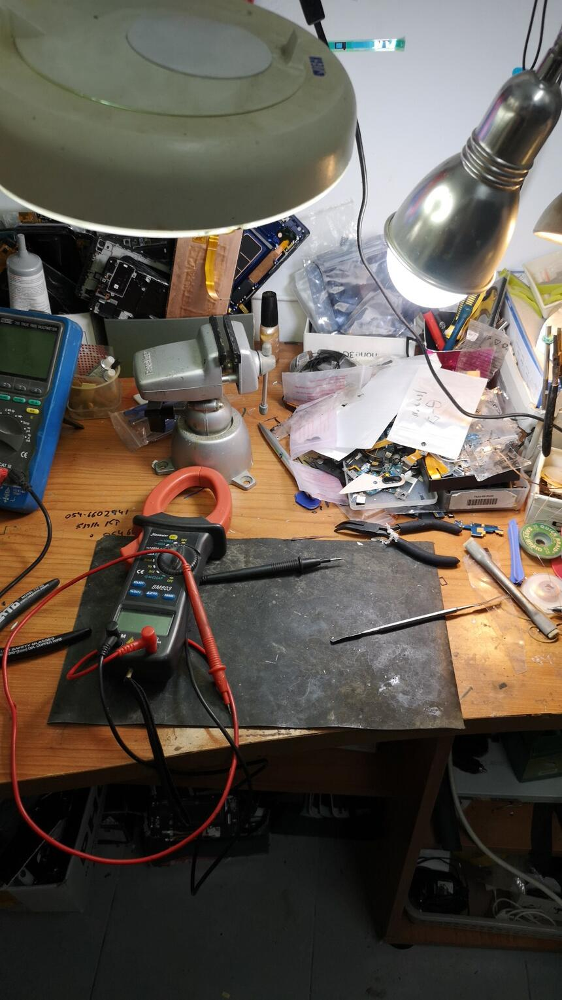
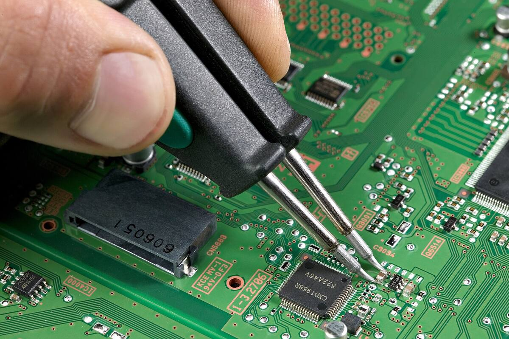
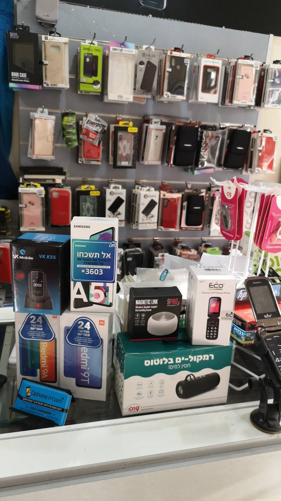

טלפוניםPhones
מכל היצרנים, מהמסך ועד הלוח.Every maker, from the screen to the board.
Apple, Samsung, Sony, Nokia
קונספט לדוגמה שנבנה עבור מעבדת Dphone · זה אינו האתר הרשמי של העסקA sample concept built for Dphone Lab · This is not the business’s official website


הכול קורה מתחת לזכוכיתIt all happens under the glass
תיקון כל סוגי הטלפונים והמחשבים, על שולחן העבודה של דני ברחוב הילדים 32.Every kind of phone and computer, repaired on Danny’s bench at 32 HaYeladim Street.
טלפוניםPhones
מכל היצרניםevery makerטאבלטיםTablets
מכל הסוגיםevery kindמחשביםComputers
ניידים ונייחיםlaptops and desktops
טלפונים, טאבלטים ומחשבים מכל הסוגים. ובחנות גם אביזרים וחלקי חילוף.Phones, tablets and computers of every kind. And in the shop, accessories and spare parts too.
ספרו לדני מה קרהTell Danny what happened
מכל היצרנים, מהמסך ועד הלוח.Every maker, from the screen to the board.
Apple, Samsung, Sony, Nokia
ניידים, נייחים וטאבלטים.Laptops, desktops and tablets.
נייד, נייח, טאבלטlaptop, desktop, tablet

ניקוי קורוזיה למכשיר שנרטב.Corrosion cleaning for a device that got wet.
מים, לחות, קורוזיהwater, damp, corrosion

כיסויים, מטענים ואוזניות על הקיר בחנות.Cases, chargers and headphones on the shop wall.
כיסויים, מטענים, אוזניותcases, chargers, headphones
ככה עובר מכשיר במעבדה, בארבע תחנות.How a device moves through the lab, in four stops.
מסובבים את הכפתורים, וההודעה נכתבת לבד.Turn the knobs and the message writes itself.
אל: דני · מעבדת DphoneTo: Danny · Dphone Lab
שליחה לדני בוואטסאפSend to Danny on WhatsAppיוסי בן הרוש
ביקורת בגוגלGoogle review, translated from Hebrew
״הציל לי את הטלפון שאף מעבדה לא הצליחה. מחיר הוגן.״“Saved my phone when no other lab could. A fair price.”
״בן אדם אמין מאוד, ממליצה בחום. הצליח לעשות לי מה שאף אחד לא הצליח, רק דני הצליח. מחיר הוגן. מקצוען, אין מה להגיד.״“A very trustworthy person, warmly recommended. He managed what nobody else could, only Danny did. Fair price. A real professional.”
״שירות סבלני ואדיב מצד בעל המקום, שממש עזר לי. גם מקצוען, גם אדיב וגם אמין.״“Patient, kind service from the owner, who really helped me. A professional, kind and trustworthy.”
״ממליץ מספר 1 בתחום. מקצוענים והרגשה כמו בבית. יחס חם. ללא ספק 10 מתוך 10.״“Number one in the field. Professionals, and it feels like home. Warm attitude. 10 out of 10, no doubt.”
״תותח! סידר לי כבר כמה טלפונים, ובמיוחד לבן החייל, במחיר הוגן וסופר מקצועי.״“A star! He has fixed several phones for me, my soldier son’s too, at a fair price and very professionally.”
״הציל לי את הטלפון שאף מעבדה לא הצליחה. מחיר הוגן. מקצוען באמת.״“Saved my phone when no other lab could. Fair price. A true professional.”
ביקורות אמיתיות מגוגל, בקיצור קל.Real Google reviews, lightly shortened and translated from Hebrew.
ברחוב הילדים 32 בקריית מוצקין, ליד מספרת דוד ברק.At 32 HaYeladim Street, Kiryat Motzkin, next to the David Barak hair salon.
ראשון עד חמישי 10:00–19:00, שישי 10:00–14:00, שבת סגור.Sunday to Thursday 10:00–19:00, Friday 10:00–14:00, closed on Saturday.
טלפונים, טאבלטים ומחשבים מכל הסוגים.Phones, tablets and computers of every kind.
במעבדה עושים ניקוי קורוזיה. שלחו לדני הודעה והביאו את המכשיר לבדיקה.The lab does corrosion cleaning. Send Danny a message and bring the device in to be checked.
כן. כיסויים, מטענים, אוזניות וחלקי חילוף, בחנות עצמה.Yes. Cases, chargers, headphones and spare parts, right in the shop.
כן, בטלפון או בוואטסאפ: 052-598-8669.Yes, by phone or WhatsApp: 052-598-8669.
קריית מוצקין, ליד מספרת דוד ברק.Kiryat Motzkin, next to the David Barak hair salon.